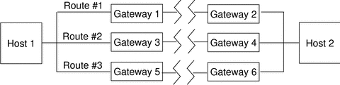

Solaris Trusted Extensions Administrator's Procedures
|
|||||||||||||||||||||
|
Part I Initial Configuration of Trusted Extensions 1. Security Planning for Trusted Extensions 2. Configuration Roadmap for Trusted Extensions 3. Adding Solaris Trusted Extensions Software to the Solaris OS (Tasks) 4. Configuring Trusted Extensions (Tasks) 5. Configuring LDAP for Trusted Extensions (Tasks) 6. Configuring a Headless System With Trusted Extensions (Tasks) Part II Administration of Trusted Extensions 7. Trusted Extensions Administration Concepts 8. Trusted Extensions Administration Tools 9. Getting Started as a Trusted Extensions Administrator (Tasks) 10. Security Requirements on a Trusted Extensions System (Overview) 11. Administering Security Requirements in Trusted Extensions (Tasks) 12. Users, Rights, and Roles in Trusted Extensions (Overview) 13. Managing Users, Rights, and Roles in Trusted Extensions (Tasks) 14. Remote Administration in Trusted Extensions (Tasks) 15. Trusted Extensions and LDAP (Overview) 16. Managing Zones in Trusted Extensions (Tasks) 17. Managing and Mounting Files in Trusted Extensions (Tasks) 18. Trusted Networking (Overview) Network Security Attributes in Trusted Extensions Trusted Network Fallback Mechanism Overview of Routing in Trusted Extensions 19. Managing Networks in Trusted Extensions (Tasks) 20. Multilevel Mail in Trusted Extensions (Overview) 21. Managing Labeled Printing (Tasks) 22. Devices in Trusted Extensions (Overview) 23. Managing Devices for Trusted Extensions (Tasks) 24. Trusted Extensions Auditing (Overview) 25. Software Management in Trusted Extensions (Tasks) Creating and Managing a Security Policy Site Security Policy and Trusted Extensions Computer Security Recommendations Physical Security Recommendations Personnel Security Recommendations Additional Security References B. Using CDE Actions to Install Zones in Trusted Extensions Associating Network Interfaces With Zones by Using CDE Actions (Task Map) Preparing to Create Zones by Using CDE Actions (Task Map) Creating Labeled Zones by Using CDE Actions (Task Map) C. Configuration Checklist for Trusted Extensions Checklist for Configuring Trusted Extensions D. Quick Reference to Trusted Extensions Administration Administrative Interfaces in Trusted Extensions Solaris Interfaces Extended by Trusted Extensions Tighter Security Defaults in Trusted Extensions Limited Options in Trusted Extensions E. List of Trusted Extensions Man Pages Trusted Extensions Man Pages in Alphabetical Order |
Administration of Routing in Trusted ExtensionsTrusted Extensions supports several methods for routing communications between networks. In the Security Administrator role, you can set up routes that enforce the degree of security required by your site's security policy. For example, sites can restrict communications outside the local network to a single label. This label is applied to publicly available information. Labels such as UNCLASSIFIED or PUBLIC can indicate public information. To enforce the restriction, these sites assign a single-label template to the network interface that is connected to the external network. For more details about TCP/IP and routing, see the following:
Choosing Routers in Trusted ExtensionsTrusted Extensions hosts offer the highest degree of trust as routers. Other types of routers might not recognize Trusted Extensions security attributes. Without administrative action, packets can be routed through routers that do not provide MAC security protection.
To support trusted routing, the Solaris Express Community Edition routing tables are extended to include Trusted Extensions security attributes. The attributes are described in Routing Table Entries in Trusted Extensions. Trusted Extensions supports static routing, in which the administrator creates routing table entries manually. For details, see the -p option in the route(1M) man page. The routing software tries to find a route to the destination host in the routing tables. When the host is not explicitly named, the routing software looks for an entry for the subnetwork where the host resides. When neither the host nor the network where the host resides is defined, the host sends the packet to a default gateway, if defined. Multiple default gateways can be defined, and each is treated equally. In this release of Trusted Extensions, the security administrator sets up routes manually, and then manually changes the routing table when conditions change. For example, many sites have a single gateway that communicates with the outside world. In these cases, the single gateway can be statically defined as the default on each host on the network. Dynamic routing support might be available in future releases of Trusted Extensions. Gateways in Trusted ExtensionsAn example of routing in Trusted Extensions follows. The diagram and table show three potential routes between Host 1 and Host 2. Figure 18-1 Typical Trusted Extensions Routes and Routing Table Entries
Routing Commands in Trusted ExtensionsTo show labels and extended security attributes for sockets, Trusted Extensions modifies the following Solaris network commands:
For details, see the netstat(1M) and route(1M) man pages. For examples, see How to Configure Routes With Security Attributes. |
||||||||||||||||||||
|